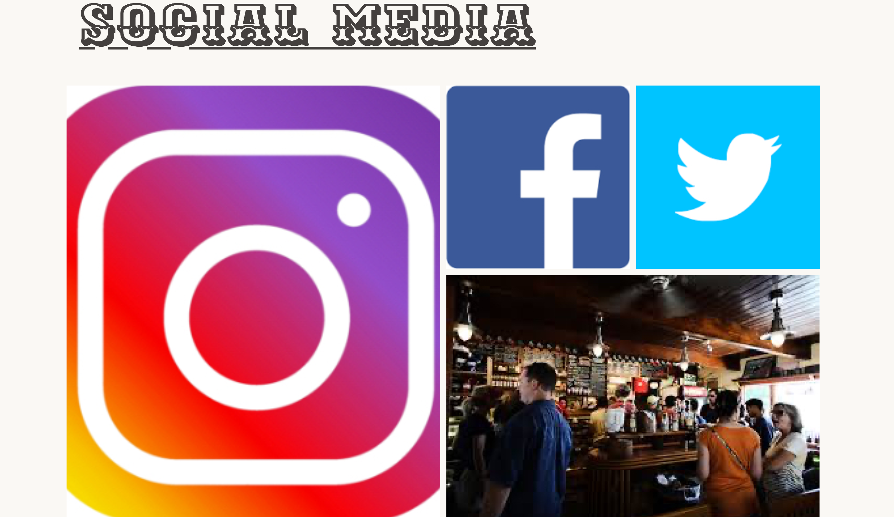
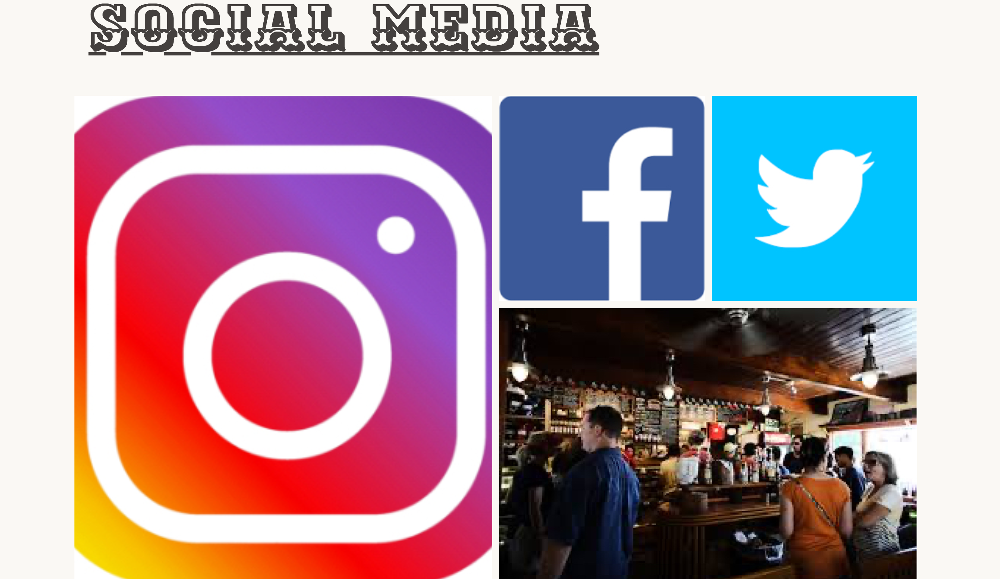
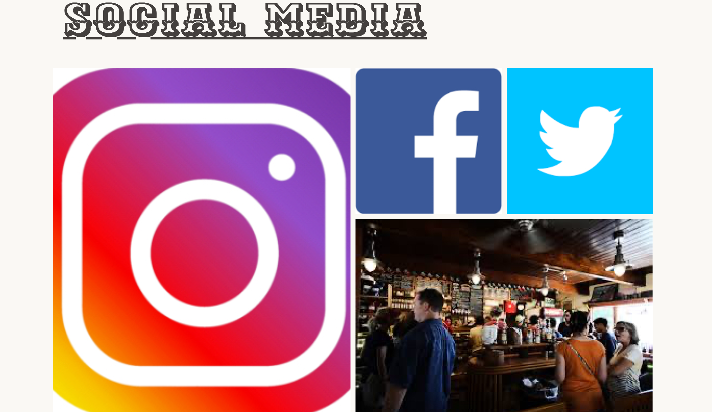

Moodboard ↓
 

Styletile for stilart ↓

På dette forløb blev vi introduceret for programmeringssprogene HTML og CSS. Vi fik også kendskab til Adobe Creative Cloud, specifikt Adobe XD, da vi lavede moodboard og Photoshop, da vi lavede splashbillede til vores website.
Jeg fik tilegnet stilarten Hipster style/Modern retro og valgte at lave et website for en whiskey-bar. Vi blev bekendte med wireframes, som hjalp mig med at sætte websitet op. På dette forløb blev vi også introduceret for layoutdiagram, flexbox og grid, som bl.a. kan ses i min sixth section (social media), hvor billederne er sat op med grid-row og grid-column for at give den placering, de har i forhold til hinanden.
Ved hjælp af @media queries, blev denne sektion også responsiv, da den i mobilformat blot viser billederne ovenpå hinanden, men ændrer sig til grid-display på over 600px.
